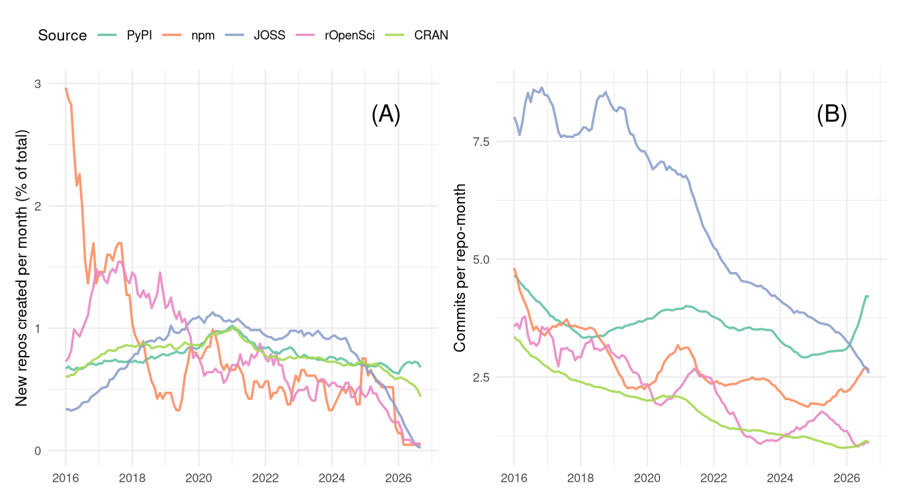
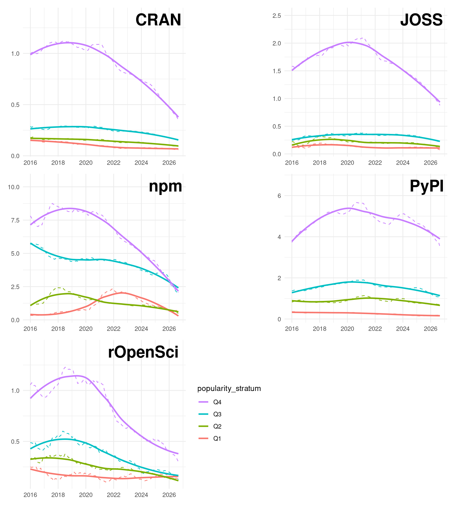
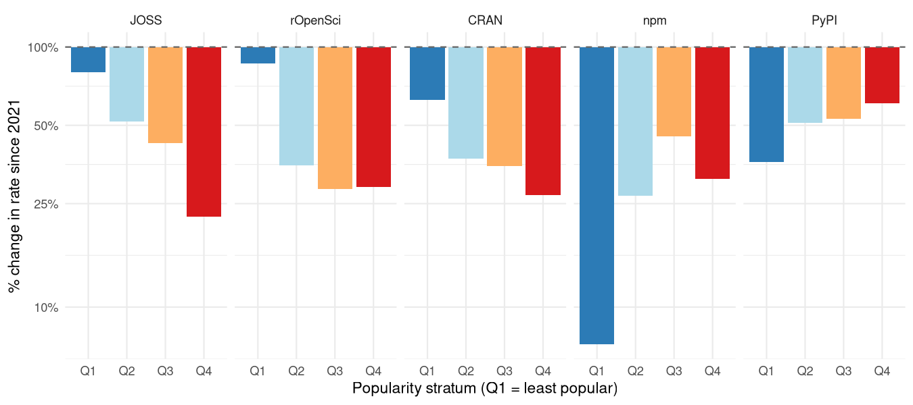
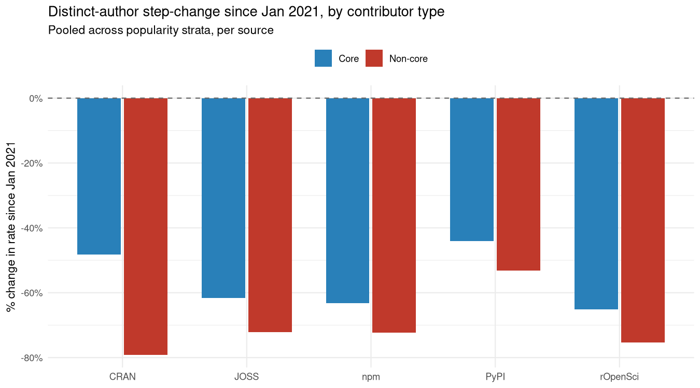
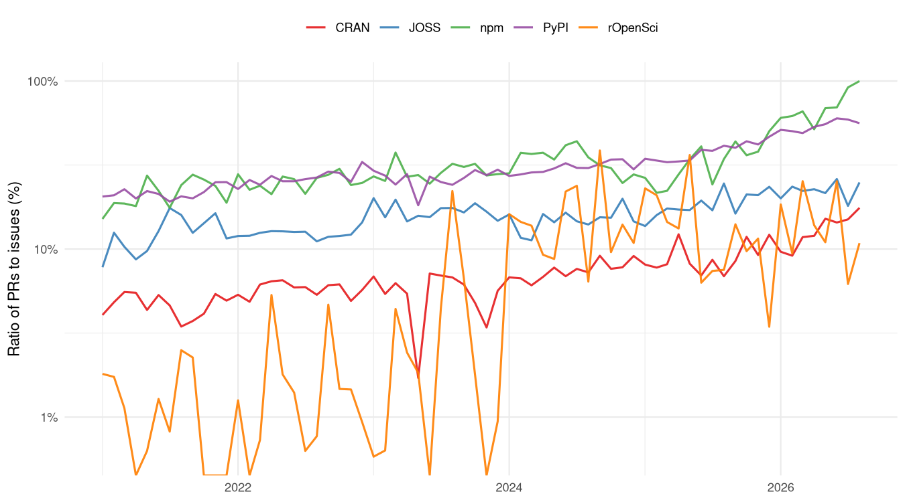
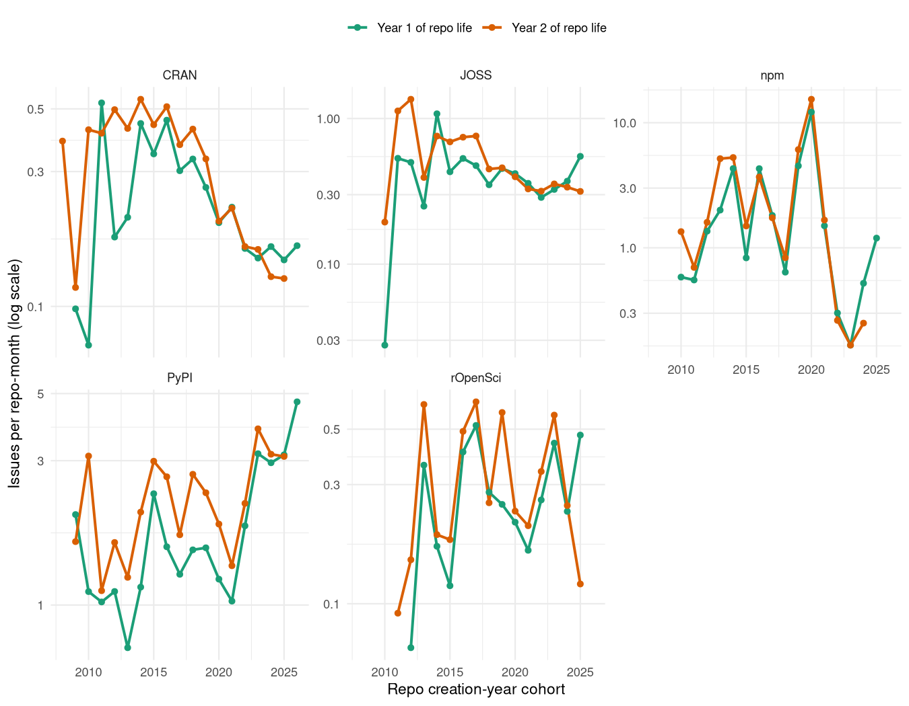

Coding Alone
Open-source communities are being progressively replaced by solo-developers.
2026-10-02
Source:vignettes/coding-alone.qmd
In 1995, Robert Putnam noticed that more Americans were bowling than ever before, but the growth was in solo or casual bowling at the expense of organised, collective bowling He argued that this was reflective of a broader collapse of associational habits which used to knit Americans into overlapping social groups. Local clubs, unions, congregations, leagues had been quietly hollowing out for a generation, not because people had lost interest in the underlying activities, but because they’d stopped doing them together (Putnam 1995, 2000). The incidental organizational structure of bowling leagues turned out to have been key to the way a potentially solitary pastime contributed to social cohesion.
Open-source software has its own version of a league: public repositories, with a few core maintainers and shifting casts of outsiders who ask questions, report bugs, or leave comments. These communities of contributors guide and nurture ongoing software development. People still write code, but this analysis shows that the collective structures that have supported and sustained that writing are changing dramatically. Public software repositories are changing from places of social coherence and cohesion to become more like mere mirrors of a single person’s work.
Why does this matter?
Maybe software coded by increasingly isolated individuals will be just a good as previous software coded by larger communities building on one another’s ideas? Maybe a bunch of individuals with large enough budgets for billions on AI tokens will be able to usher in a new golden age of genius software? It’s obviously helpful at the outset to try to figure out whether that’s likely to happen or not.
The first problem in doing that is that good software is not easy to define. But at least for open-source software, popularity can generally be presumed to reflect quality. Popular open-source software can generally be presumed to be good (even though lots of really good software may go unnoticed). And popularity can be measured, generally by numbers of downloads, as well as by metrics like numbers of times people have “starred” software repositories on GitHub.
All of the following analyses use random selections of repositories from several common software distribution systems, including npm for Javascript, PyPI for Python, CRAN for R, and two GitHub-based software review organizations, JOSS (the Journal of Open-Source Software), and rOpenSci. Data extracted for each of these can show whether larger communities help produce better software, as measured through popularity.
Relationships between community size and popularity are of course complicated by the fact that both tend to change and interact over time (ideally through growing together). Such mutual interactions can easily be statistically accounted for, to estimate the effects of community size on repository popularity independent of any influence of repository age on either of those measures. And doing that reveals the relationships shown in the following figure:
Good software - as measured by popularity - is overwhelmingly produced by larger communities. This relationship is of course purely correlative, and can say nothing about whether larger communities actually cause software quality to increase. But it is nevertheless sufficient to clearly show why this matters: Software produced by smaller communities tends to be significantly less popular. This suggests that any decreases in the sizes of communities producing software will likely be associated with decreases in software popularity, and quite likely decreases in software quality.
To answer the question this section posed: These analyses matter because good software emerges from large communities, and anything that works to reduce community size will also work to reduce software quality. The rest of this analyses provides various insights in to what appears to be a comprehensive collapse of open-source communities.
What was measured
All data are taken from GitHub, primarily as measures of interaction with software repositories through “issues”. Issues are the place for anybody to ask questions of software authors, to report bugs, or to request new features. A corpus of repositories was taken from the five sources described above.
Analyses included every repository reviewed by JOSS and rOpenSci, every package currently on CRAN, and samples from the other three. Samples were stratified by popularity to ensure even sampling and representation regardless of popularity. In total, 3,139,779 issues were analysed across 52,461 repositories.
More popular or prominent repositories attract greater interaction, resulting in issues being opened more frequently, and from a wider community. To account for the effects of repository popularity, most of the results are represented for four popularity strata, taken as quartiles on a logarithmic popularity scale. The lowest quartile, denoted “Q1”, represents the least popular repositories. Because these generally strongly outnumber popular repositories, these Q1 values may be generally interpreted to reflect the majority of all repositories. The “Q4” repositories are the outlying superstar repositories with enormous numbers of downloads and hundreds of people opening issues. A few additional statistics were also extracted, and are described alongside the main analyses.
But what about pull requests?
GitHub also implements “pull requests”, which allow people to upload their own code changes and request that they be “merged” with the repository’s code. Pull requests are not the place for most people who simply want to ask questions, or to request that software be adapted or modified for their own particular purposes. Pull requests from non-core contributors generally follow explicit requests in issues. I’ll briefly examine pull requests at the end of this analysis. I’ll also show there that pull requests represent only a minor portion of all interactions with repositories on GitHub, with the rest coming through issues.
The focus of these analyses is on the primary point of community interactions with open-source software, and these have always been issues and not pull requests.
Main Findings
Finding #1: People are coding less
Although the main focus here is on the demise of open-source communities, all data also reveal a pervasive decline in coding activity in general. The most direct measures of coding activity are the creation of new repositories, and numbers of commits in each. Time series of these two statistics are shown in the following two panels. Both of these show trends common to most results that follow, with variable development up until 2020-2021, followed by more progressive declines. Reflecting these general patterns, many of the results below only show time series from 2021 onwards. Comparisons are also made as “step changes” between January 2021 and the present (Oct 2026)

Decreases in repository creation could of course simply reflect people moving towards alternative code hosting sites. other than GitHub. Such effects are not considered further here, but all analyses that follow are derived from software which (still) identifies GitHub as its primary source, and are therefore independent of whether or not people are abandoning GitHub for alternative sites. The rates of monthly commits of Figure 2 are an example. Most of these rates have declined over the past few years, and directly reflect genuine declines observed among those people still active on GitHub.
Finding #2: There Are Fewer Contributors
There are several ways to measures numbers of contributors to open-source software. Source code itself provides one of the most direct measures, generally through tracking who made each change. Code-hosting platforms provide a different approach, through data on repository issues. Anybody (with an account) can open an issue to ask a simple question. Many who do may not necessarily end up directly contributing to code at all, while almost all non-core developers who do contribute code start their first interactions via issues. Data on issues therefore offers more inclusive insights into open-source communities than data on direct code contributors.
Figure 3 shows numbers of unique people opening new issues on repositories for the five software ecosystems. All counts are standardised to numbers of new issues per repository per month. All of these patterns reveal consistent changes either side of around 2020. And all of them have progressively decreased since that time.

For each software source, lines are shown for the four distributional quartiles described above. “Q4” represents the relatively few extremely popular packages, while “Q1” is the quartile of lowest popularity. (And these quartiles are defined on a logarithmic scale, so there are far more packages in Q1 than in Q4.)
The next figure (Figure 4) shows average declines since Jan 2021 for each software ecosystem and for each popularity quartile. Many of these declines are more pronounced for the most popular software (Q4), although PyPI shows the opposite trend, with decreases in numbers of unique issue authors being less severe for the most popular packages, while npm shows an intermediate pattern.
Total numbers of comments on each issue show a similar pattern (Figure 5), with similarly reversed trends for PyPi as well as npm. Taken together, these two figures reveal both numbers of issue authors and numbers of comments per issue have declined severely in all software systems over the past few years. Only for python packages in PyPI have declines been less severe for the most popular packages. In all other systems, declines have either been uniformly more severe for more popular packages or, for npm, displayed mixed patterns with the most severe declines at both ends of the popularity spectrum.

Relative differences in all statistics to this point are quantified in the following table of percentage changes since Jan 2021. Although these values show clear declines in coding itself, both in rates of repository creation and commits, declines are considerably more severe for metrics of community size. Coding is decreasing, but community interactions are shrinking even faster.
| Source | Repo creation (%) | Commits (%) | Distinct Authors (%) | Issue Comments (%) |
|---|---|---|---|---|
| JOSS | - | -57% | -61% | -84% |
| rOpenSci | - | -56% | -63% | -74% |
| CRAN | -38% | -48% | -64% | -78% |
| npm | -55% | -22% | -63% | -71% |
| PyPI | -30% | -18% | -36% | -51% |
Finding #3: New Authors Are Not Arriving
The rates at which new authors of GitHub issues appear have also progressively decreased across all software systems (Figure 6). In 18 of those 20 combinations of software source-by-popularity stratum, the new-arrival rate has fallen by more than overall author density has, meaning the decline documented above isn’t simply existing regulars posting a little less often; it’s disproportionately a shrinking supply of people showing up for the first time at all.
The following plot converts those absolute measures to relative scales, to enable comparison of relative rates of change across the popularity quartiles for each software source. In almost all cases, decreases in arrival rates of new authors are most severe for the most popular packages.
An alternative way of examining these decreases in rates of arrival are in terms of intervals between the arrival of each sequential pair of new authors (Figure 8).
These rates have also uniformly increased over the past few years. They are also notably far higher for CRAN, JOSS, and rOpenSci, in which new authors now arrive more than once per month only for the most popular packages. Only PyPi appears to not suffer this trend, with intervals between the arrival of new authors progressively decreasing over the past couple of years.
Finding #4: Spiralling Towards Solitude
For each person contributing to a repository, GitHub also provides a measure of their relative overall contribution, measured as numbers of commits to source code. These relative contribution values were used to arbitrarily distinguish core contributors to a repository as those contributing a cumulative total of 99% of all commits. Non-core contributors were then identified as those contributing less than 1% of the cumulative total. While this threshold is arbitrary, none of the results or conclusions that follow are qualitatively affected by different values.
Relative decreases in numbers of distinct authors have decreased more for non-core than for core authors for all software sources (Figure 9). In all cases, most of the decreases in contributions observed in Figure 4 and Figure 5 reflect non-core contributors decreasing at faster rates than core contributors.

The combined effect of these decreases must of course be a progression towards increasing numbers of repositories being maintained by one person only. This is exactly what Figure 10 shows. Taken collectively, 27% of repositories were effectively maintained by a single person in January 2021. By October 2026, that share had risen to 44%.
What does this mean?
Many aspects of these analyses align with what other people have reported about the people who keep open source software alive. A 2024 survey of open-source maintainers found that 61% of them maintain their project entirely alone, and that unpaid maintainers were disproportionately likely to be working alone (Socket 2024). A 2024 survey of maintainers by Tidelift found that 60% remain entirely unpaid and nearly 60% have quit, or seriously considered quitting, projects they maintain, citing reasons such as competing life demands, loss of interest, or burnout (Tidelift 2024).
In November 2025, Kubernetes’ steering and security committees retired Ingress NGINX (Kubernetes SIG Network and Security Response Committee 2025). This was one of the most widely deployed pieces of cloud-native infrastructure in existence, and would sit very high in all “Q4” high-popularity strata here. NGINX had been maintained for years by voluntary open-source contributors, and yet the exact kinds of declines observed here manifest in this case to a complete inability to find even a single person willing to maintain the project.
Good software always evolves, and part of that evolution frequently includes maintainers searching for other people to continue their work. New maintainers always emerge from communities of newcomers arriving at a project. GitHub made it far easier than ever before for newcomers to just magically appear, mostly through opening issues to ask questions. Many projects actively cultivate an open and welcoming atmosphere as an attempt to attract as many newcomers as possible, yet even that practice seems to be declining (Hoshikawa et al. 2026).
The real difficulties begin with attempts to retain the interest of newcomers. A decade-old study of one large Apache project found fewer than one in five people who initially appeared on software repositories became long-term contributors (Steinmacher et al. 2013). A decade before any of these findings, Nadia Eghbal’s Roads and Bridges described the ways by which critical open-source infrastructure was sustained by a handful of unpaid volunteers, and argued that the true shortages were always in people rather than money (Eghbal 2016). Finally, these results also reflect the well-documented collapse of Stack Overflow as a community platform (Orosz 2025; Holscher 2025).
What about AI?
The declines observed here began several years before the advent of AI as we now know it. AI has almost certainly contributed, including through mechanisms such as “algorithmic monoculture” (Bommasani et al. 2022) discouraging diverse inputs into software. Changes over the last year or two certainly seem to be accelerated versions or preceding changes, including in repo creation rates, numbers and arrival rates of new contributors, and in solo-author projects. AI is very likely to have had an influence in all of these accelerated rates of decline, although after and on top of more general and broader factors.
There have been many claims of open-source projects “drowning” in a “flood” of AI-generated pull requests. (None of those are worth citing here, as I can find no actual data to assert such claims). As described above, first points of contact for new contributors are very generally issues, with pull requests (PRs) usually only made after initial discussion within issues. This reflects ubiquitous human conventions of only doing something for somebody else after first ascertaining they actually want or need it. There is nothing special about the general workflow adopted in software development of issue first, followed by PRs. It reflects the way human interactions are generally structured. Ask first, and then do.
Data on PRs were also extracted here in the same way as data for issues. The only thing that does indeed seem to have changed is the ratio of PRs to issues (Figure 11). Proportions of PRs have been gradually increasing since 2021, with observable recent acceleration in some software systems, most notably in npm and CRAN.

Doing before asking
As stated above, most human societies cultivate habits of asking before doing. Unsolicited pull requests reverse this custom. They represent a comparably more aggressive step of doing before asking. While causes for such cultural changes are likely complex, increased social isolation does seem to foster increased aggression (Twenge et al. 2001). Although coding alone is likely to increase ratios of PRs to issues, the increases in Figure 11 more likely reveal an additionally negative influence of AI coding tools.
The large language models that underlie AI coding tools are trained on vast corpora of primarily online data. And people act differently online than they do in person. I posit that an even more likely cause for increased PR-to-issue ratios is the embedding within AI of the widely acknowledged “online disinhibition effect” (Suler 2004).
AI coding tools – and of course AI in general – are more reflective of pathologically disinhibited online behaviour than actual human social behaviour. Suler’s (2004) original descriptions are insightful:
[People] don’t have to own their own behavior by acknowledging it … The online self becomes a compartmentalized self… the person can avert responsibility [in a form of] “emotional hit and run”.
[People can] live in an [sic] make-believe dimension, separate and apart from the demands and responsibilities of the real world. [They] see their online life as a kind of game with rules and norms that don’t apply to everyday living… They relinquish their responsible [sic] for what happens in a make-believe play world that has nothing to do with reality.
Perhaps all of the declines observed here reflect increases in the kinds of behaviour described by Suler more than 20 years ago. The easier it got to do everything online, including coding, the more the behaviours of those doing the coding become disinhibited from their pro-social, in-person behaviour. AI is just the culmination of that process.
Suler’s (2004) original conclusions were cautiously framed, and acknowledged a complex interplay between “benign” and “toxic” disinhibition. More recent research (Chu et al. 2026) has demonstrated a reality that lies more to the toxic than benign side, especially in online spaces dominated by men. I’ve said elsewhere that, “Your AI thinks you’re a dude. And that’s a problem for everybody who is not.” These analyses add nuance to that conclusion, by showing how AI coding assistants are a manifestation of their training being heavily influenced by the toxically disinhibited expressions of anti-social men.
What can we do about this?
First and foremost, everything here shows an immediate need to do anything and everything to cultivate, nurture, and maintain communities. Always seek to collaborate rather than doing things yourself. Even if you don’t know anybody to collaborate with, inviting collaboration on your open-source repositories can have a big effect (Hoshikawa et al. 2026). And the results of Chu et al. (2026) provide strong evidence for the pro-social effects of community diversity – invite and encourage as many different kinds of people you can.
Perhaps most importantly if you use AI coding assistants, ensure you use them in socially aware ways. These machines are trained to implement their own work-arounds to any software issues they encounter. And they often do so silently. Start with clear instructions in an AGENTS.md file or similar NOT to so that silently, rather to tell you, to help you as a human being connect with the human developers of other software. At the very least, never let an AI coding tool open an unsolicited pull request on any repository you do not know well. That is doing without asking, which is rude. Always ask first, and do so with your own, human words. Help to re-establish open-source communities as genuinely collaborative spaces.
References
Appendix
Projects do not simply settle down with age
Of course, general interest and activity in repositories may simply decrease over time, and many of the effects observed above may simply reflect process of “settling down”: Documentation gets clarified, many questions have already been answered, and the need for engagement decreases.
This appendix demonstrates that repository age does not influence the main conclusions. Figure 12 shows two lines for each software source: One exclusively for repositories started in the indicated year, and one for repositories in their second year of life in that year. Any effects of repository age should manifest in differences between these two lines, and yet that is not what is observed. In all cases, observed rates of change remain very similar regardless of repository age. Moreover, replicating this figure for any of the metrics analysed in the main text yields qualitatively very similar results. Repository age therefore has little or no qualitative effect on any of the results shown in the main text.
